Assembly environment overview
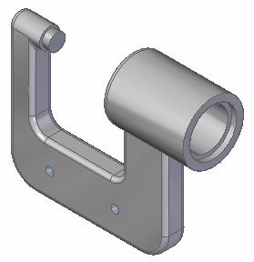
In the next few steps, familiarize yourself with the assembly document.
Learn how to highlight and select assembly components using PathFinder.
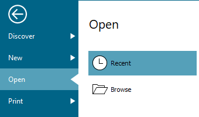
Choose File menu→Open.
On the Open tab, click the Browse command to browse to a document.
The Open File dialog box displays.
Navigate to the Solid Edge training folder. The default location is:
C:\Program Files\Siemens\Solid Edge 2023\Training
Open the assembly model document—
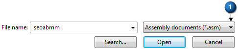
-
Set the Files of type (1) list to Assembly documents (*.asm).
-
Click seoabmm.
-
Click the Open button.
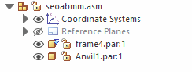
PathFinder should already be displayed. If not, follow these steps to display it.
Click the Views tab→Show group→Panes command.
Click PathFinder in the list.
Use PathFinder to review and edit the assembly structure, hide and display assembly components, such as parts, subassemblies, coordinate systems, and reference planes.
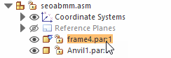
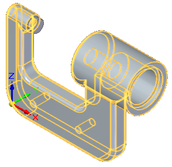
In the top pane of PathFinder, position the cursor over the Frame4.par entry, but do not click.
Notice that the frame part display changes color in the assembly window.
Move the cursor away and notice that the display returns to the previous color.
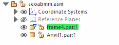
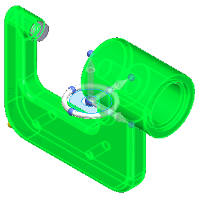
When working in assemblies, you can temporarily highlight components using PathFinder, and also select them.
In PathFinder, position the cursor over the frame part again, then click, and move the cursor away.
Observe the following:
-
The part color in the graphics window changes to a different color than in the previous step.
-
When selecting the part, the bottom pane of PathFinder displays the assembly relationships used to position the part, as shown below.
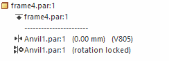
-
Since this was the first part placed in the assembly, the ground relationship symbol
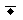
is displayed.
If you cannot see the relationship symbols, use the scroll bar to move them into view, and drag the top of this display area higher, to make more room for them.
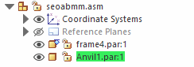
-
In PathFinder, position the cursor over the anvil part, then click, and move the cursor away.
Notice that when selecting the anvil part, the bottom pane of PathFinder displays the two assembly relationships used to position the part, as shown below.
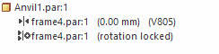
A mate relationship and an axial align relationship were used to position the part with respect to the frame part.
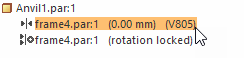
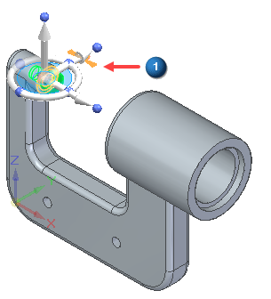
-
Position the cursor over the first assembly relationship in the bottom pane of PathFinder as shown in the top illustration, but do not click.
Notice that the two faces used to position the anvil part highlight in the graphics window, along with a symbol (1) representing the relationship between them.
In the graphics window, click in free space to deselect the anvil part.
In PathFinder, position the cursor over the arrow symbol adjacent to the Coordinate Systems collector, and click.
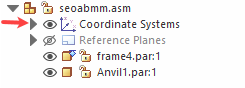
An entry for the Base coordinate system displays.
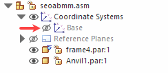
There is one Base coordinate system in an assembly document, located at the center of the design space. Any additional coordinate systems defined are added to the Coordinate Systems collector in PathFinder.
In PathFinder, position the cursor over the Show/Hide button adjacent to the Base entry, and then click.
The coordinate system is hidden in the graphics window, as shown below.
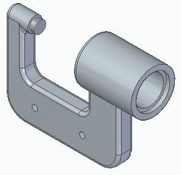
Notice that the text in PathFinder for the Base entry has changed color.
Use the Show/Hide button in PathFinder to display and hide assembly components.
The individual entries in PathFinder also change color to indicate the current status of the assembly components.
-
Choose Fit
 to fit the contents of the view to the graphics window.
to fit the contents of the view to the graphics window.
Congratulations, the first step in this tutorial is complete: Getting familiar with the current state of the assembly and learning about PathFinder options in an assembly document.